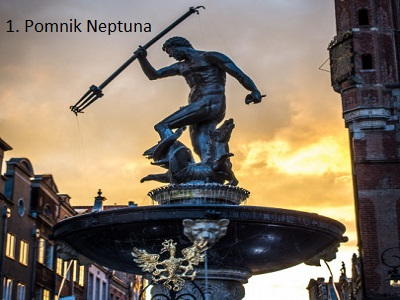

Fontanna Neptuna (kaszub. Krzysztof)zabytkowa fontanna w Gdansku, ktora powstała z inicjatywy burmistrza Bartłomieja Schachmanna
i rady miejskiej. Stoi w najbardziej reprezentacyjnej części Gdańska na Długim Targu, przed wejściem do Dworu Artusa.